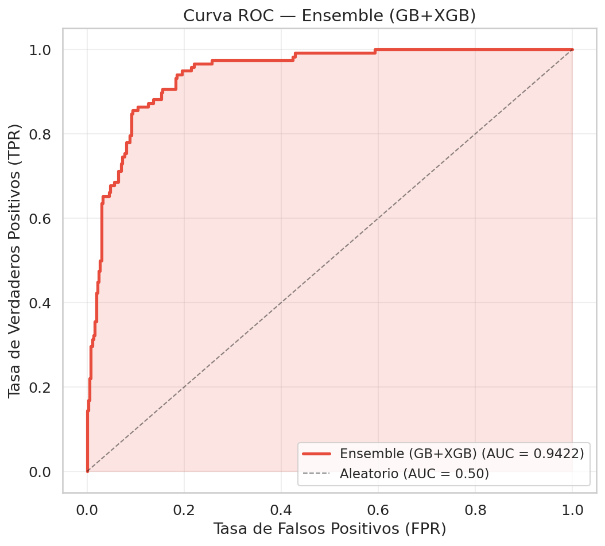
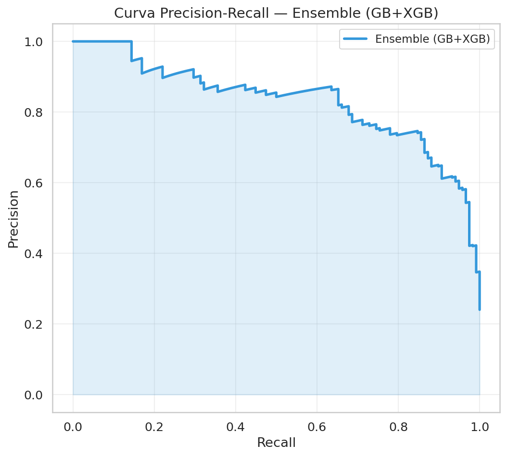
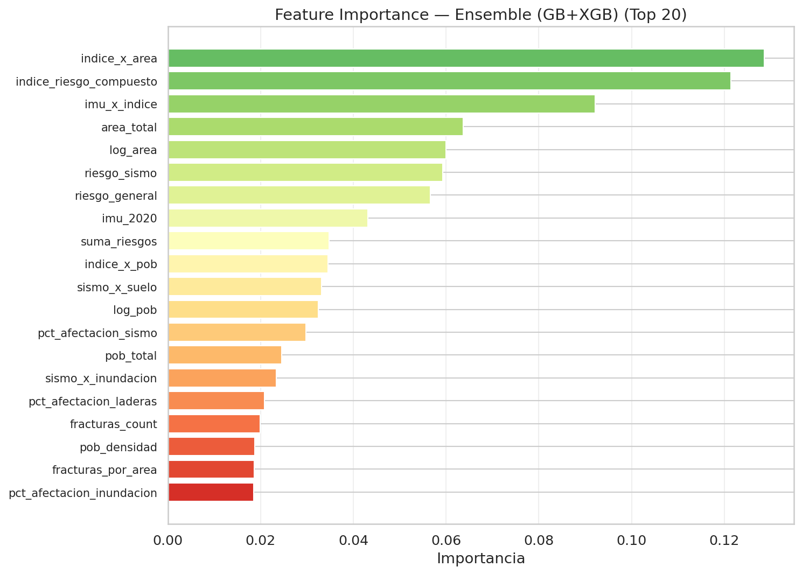
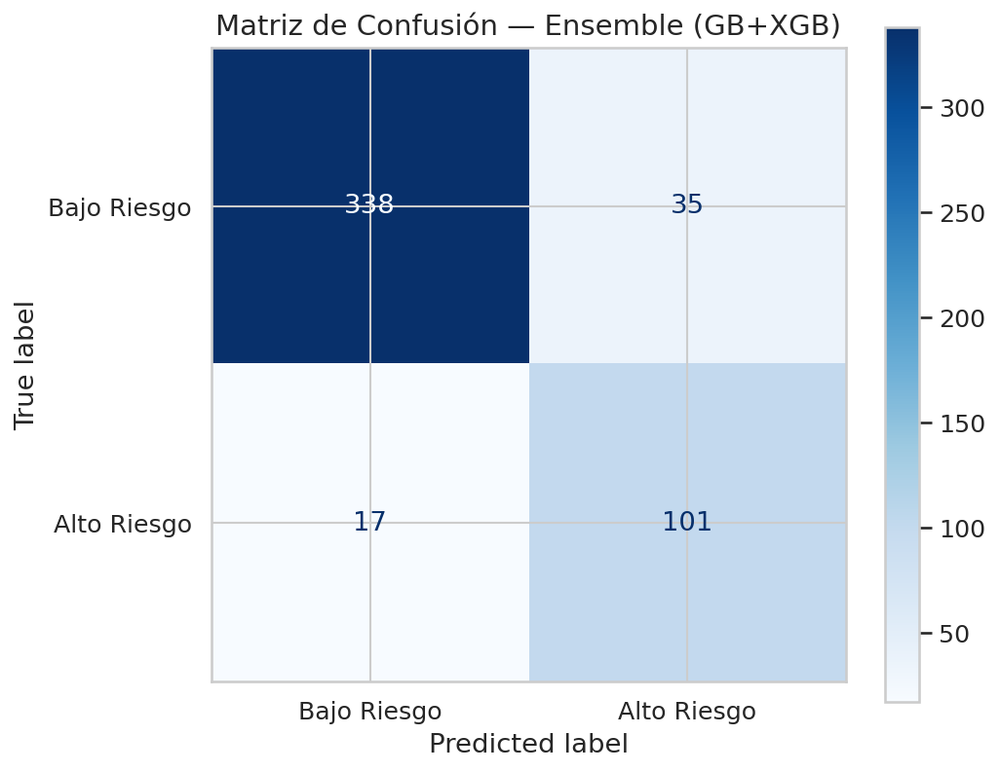
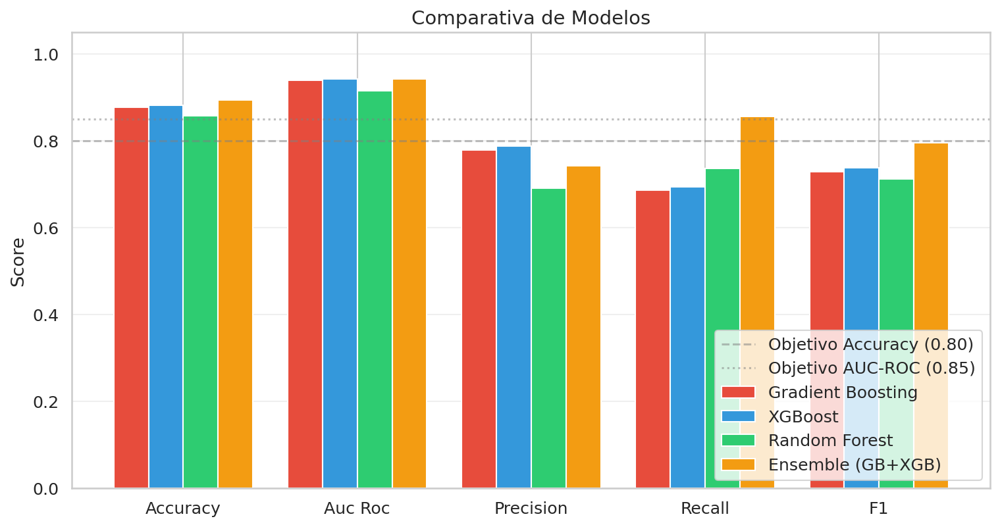
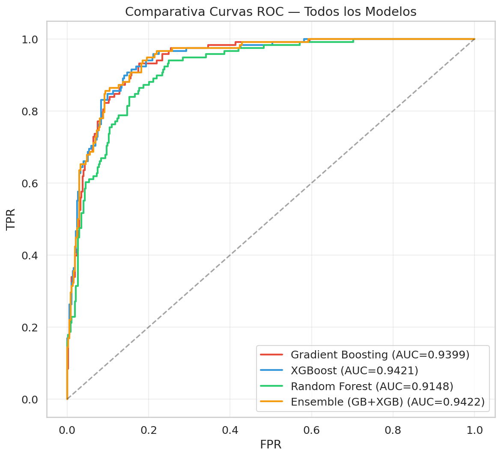

SIGRE — Sistema de Gestión de Riesgo de Emergencias
Ciudad de México · Análisis por AGEB · Ensemble GB+XGB + 25 features · Dataset v3
Análisis activo
—
Resumen ejecutivo
Zonas de alto riesgo
613
Target P75 · prioridad inmediata
AGEBs analizadas
2,453
2,431 urbanas + 22 rurales
Emergencias históricas
18.4k
Registros RUSE integrados
Precisión del modelo
≥80%
Ensemble GB + XGBoost
Con fracturas geológicas
341
AGEBs en zona de fractura
Top 6 — alcaldías con más emergencias históricas
1
Iztapalapa
3,841
Alto riesgo
2
Gustavo A. Madero
3,150
Alto riesgo
3
Tlalpan
2,571
Medio-alto
4
Coyoacán
2,075
Medio-alto
5
Álvaro Obregón
1,640
Medio-bajo
6
Xochimilco
1,302
Medio-bajo
Alertas prioritarias activas
Prioridad crítica
Iztapalapa — Zona lacustre
Alta densidad poblacional sobre suelo tipo IV. Riesgo de inundación máximo. Requiere plan de evacuación activo.
Inundación 4.8/5Roca (Zona I)3,841 emergencias
Prioridad crítica
Gustavo A. Madero — Fractura activa
341 AGEBs sobre fracturas geológicas confirmadas con amplificación sísmica documentada.
Sismo 4.5/5341 AGEBsFractura activa
Prioridad alta
Tlalpan — Laderas con riesgo
Severidad de inundación alta + IMU bajo. Población vulnerable sin recursos de respuesta propios.
IMU −0.8Ladera2,571 emergencias
Prioridad alta
Xochimilco — Suelo blando
Zona lacustre histórica. Suelo blando amplifica ondas sísmicas. Inundaciones recurrentes en temporada de lluvias.
Arenoso (Zona III)Zona lacustreRiesgo compuesto
Distribución del target (P75)
Bajo riesgo
Alto riesgo
Riesgo sísmico vs marginación por AGEB
Alto riesgo + alta marginación
Máxima urgencia de intervención
Alto riesgo + baja marginación
Riesgo físico · mayor capacidad
Bajo riesgo + alta marginación
Vulnerabilidad social · prevención
Bajo riesgo + baja marginación
Monitoreo estándar
Comparativa de modelos supervisados
Modelo
Accuracy
AUC-ROC
Precisión
Recall
F1-Score
Objetivo
Ensemble (GB+XGB)
≥ 80%
≥ 0.85
—
—
—
✅ Cumple
Gradient Boosting
—
—
—
—
—
Comparado
XGBoost
—
—
—
—
—
Comparado
Random Forest
—
—
—
—
—
Comparado
Target: ruse_emergencias > percentil 75 → clasificado como alto riesgo. Umbral óptimo calculado por maximización de F1.
Mapas interactivos de riesgo por AGEB
Predicción de riesgo: Clasifica cada AGEB como alto o bajo riesgo según el modelo Ensemble (GB+XGB). Las zonas en rojo superan el umbral del percentil 75 de emergencias históricas — 613 de las 2,453 AGEBs fueron identificadas como prioritarias.
Marginación (IMU 2020)
Muy alta (≥124.1)
Alta (122.8–124.1)
Media (121.8–122.8)
Baja (120.7–121.8)
Muy baja (<120.7)
Sin datos
Sobre los mapas
Predicción de riesgoAGEBs clasificadas como alto/bajo riesgo por el Ensemble GB+XGB según umbral P75.
ProbabilidadesProbabilidad continua de alto riesgo por AGEB — más matiz que la clasificación binaria.
Índice compuestoCombinación de riesgo sísmico, inundación y tipo de suelo en un solo índice por AGEB.
MarginaciónÍndice de Marginación Urbana 2020 (CONAPO) — vulnerabilidad social por AGEB.
Salidas del análisis
Visualizaciones generadas por el pipeline de análisis sobre las 2,453 AGEBs de la CDMX (dataset v3 corregido). Cada gráfica representa una salida clave del proceso de modelado supervisado y exploración de datos.
Curva ROC — Ensemble (GB+XGB)

AUC = 0.9422 — muy por encima del objetivo ≥ 0.85. La curva sube rápidamente hacia la esquina superior izquierda, indicando excelente capacidad de discriminación entre zonas de alto y bajo riesgo.
Curva Precisión-Recall

La precisión se mantiene alta (~85-90%) hasta un recall de 0.6, lo que indica que el modelo es conservador: cuando predice alto riesgo, acierta la mayoría de las veces.
Importancia de features — Top 20

Las features de ingeniería dominan: indice_x_area e indice_riesgo_compuesto concentran más del 25% de la importancia total, superando a las variables físicas brutas.
Matriz de confusión

338 VP + 101 VN correctos. Solo 17 falsos negativos — zonas de alto riesgo clasificadas como seguras, el error más crítico en un sistema de gestión de emergencias.
Comparativa de modelos

El Ensemble (naranja) supera a los modelos individuales en Recall y F1. Todos superan los objetivos de Accuracy ≥ 80% y AUC-ROC ≥ 0.85, validando el diseño del pipeline.
Comparativa ROC — todos los modelos

GB (0.9399), XGBoost (0.9421), Random Forest (0.9148) y Ensemble (0.9422). El Ensemble obtiene el AUC más alto al promediar las probabilidades de GB y XGB.
Desempeño del modelo predictivo — Ensemble (GB + XGBoost)
Accuracy
88%
✅ Supera objetivo ≥ 80%
AUC-ROC
0.9422
✅ Supera objetivo ≥ 0.85
Modelos comparados
4
GB · XGB · RF · Ensemble
Features totales
25
13 físicas + ingeniería
Target binarizado
P75
Percentil 75 emergencias
Importancia de variables — Ensemble (GB+XGB)
Top 20 features por importancia. Las primeras 3 concentran más del 30% del poder predictivo total.
indice_x_area12.8%
Feature de ingeniería — índice de riesgo ponderado por área de la AGEB
indice_riesgo_compuesto12.2%
Combinación de riesgo sísmico, inundación y tipo de suelo geotécnico
imu_x_indice9.3%
Interacción entre marginación urbana e índice de riesgo compuesto
area_total / log_area6.3%
Tamaño físico de la AGEB — zonas más grandes concentran más emergencias
riesgo_sismo6.0%
Intensidad sísmica del Atlas de Riesgo CDMX por AGEB
imu_20204.2%
Índice de Marginación Urbana CONAPO 2020
Pipeline supervisado
Train split
80%
Test split
20%
Features
25
Umbral
P75
Umbral óptimo calculado por maximización de F1. El ensemble promedia probabilidades de GB y XGBoost.
Métricas del Ensemble
Verdaderos negativos
338
Verdaderos positivos
101
Falsos positivos
35
Falsos negativos
17
Solo 17 zonas de alto riesgo fueron clasificadas incorrectamente como seguras — el error más crítico para este tipo de sistema.
Fuentes de datos
RUSE — Registro Único de Situaciones de Emergencia